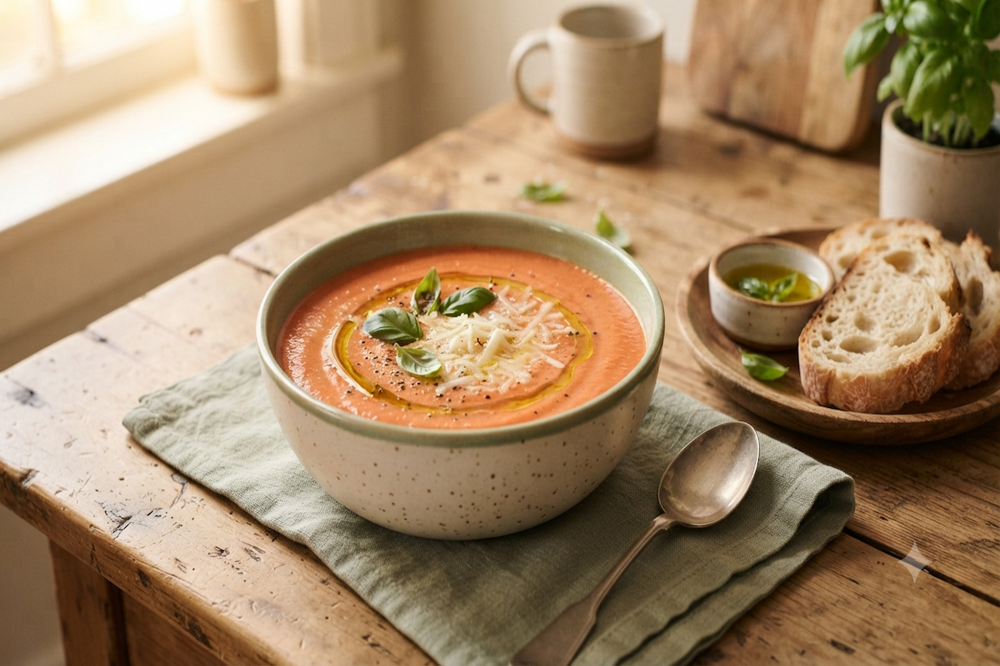

Sopa de Tomate
Desfrute do sabor irresistível da nossa sopa de tomate, uma combinação perfeita de tomates frescos e ervas aromáticas que vai aquecer seu coração. Simples de preparar e incrivelmente deliciosa — o conforto que você procura em dias frios (ou sempre que quiser algo leve e saboroso).
- Tempo de preparo: 1 hora e 10 minutos
- Rendimento: 8 porções
- Dificuldade: Médio
Ingredientes
Modo de Preparo
Veja também: Risoto de Cogumelos